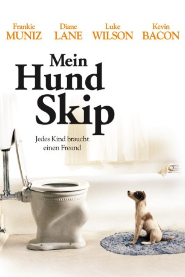

#4273 Mein Hund Skip
Alternativ: My Dog Skip
 
 IMDB-Wertung: 7.0 / 10
IMDB-Wertung: 7.0 / 10  Metascore: 0
Metascore: 0 
Willies bester Freund heißt Skip--und ist ein Hund. Der schüchterne 9-jährige bekommt den talentierten Terrier zum Geburtstag geschenkt. Dank Skips beeindruckender, aber auch unkonventioneller Hilfe werden aus den fiesen Rabauken der Nachbarschaft schnell dicke Freunde. Gemeinsam bestehen die beiden gruselige Mutproben und überraschen dabei düstere Ganoven. Selbst das schönste Mädchen der Schule ist beeindruckt und interessiert sich plötzlich für Willie. Mein Hund Skip ist die herzerwärmend und humorvolle Verfilmung einer wahren Geschichte, die Jung und Alt gleichermaßen begeistern wird.
Jahr: 2000
Dauer: 95 Minuten
FSK: 6
Land: USA Studio: Warner Bros.Tonspuren: DTS - ,
Untertitel: Englisch,
Auflösung: 720p (1280x720) Größe: 4730 MB
Genre: Drama, Familie, Sport
Regisseur: Jay Russell
Drehbuch: Michael Blankfort
Soundtrack:
Darsteller:
- Frankie Muniz als Willie Morris
 Diane Lane als Ellen Morris
Diane Lane als Ellen Morris Luke Wilson als Dink Jenkins
Luke Wilson als Dink Jenkins Kevin Bacon als Jack Morris
Kevin Bacon als Jack Morris Cody Linley als Spit McGee
Cody Linley als Spit McGee Caitlin Wachs als Rivers Applewhite
Caitlin Wachs als Rivers Applewhite Clint Howard als Millard
Clint Howard als Millard- Susan Carol Davis als Mrs. Jenkins
- Nathaniel Lee Jr. als Sammy
- John M. Sullivan II als Hunter #1
- Elizabeth Rice als Rivers' Friend
 Nate Bynum als Man on Street
Nate Bynum als Man on Street- Stacie Doublin als Woman on Street
- William Butler als Barney
- Hunter Hayes als Accordion Boy
- Cannon Smith als Bible Boy
- Courtney Brown als Snake girl
- Jordan Williams als Lt. Hartman
- Graham Gordy als Pump Jockey
 Harry Connick Jr. als Narrator
Harry Connick Jr. als Narrator- Enzo the Dog als Skip
- Moose als Old Skip
- Bradley Coryell als Big Boy Wilkinson
- Daylan Honeycutt als Henjie Henick
- Peter Crombie als Junior Smalls
- Mark Beech als Army Buddy
- David Pickens als Mr. Jenkins
- Lucile Doan Ewing als Aunt Maggie
- Polly Craig als Grandmother Mamie
- John Stiritz als Grandfather Percy
- Katherine Shoulders als Mrs. Applewhite
- Joann Blackenship als Miss Abbott
- Brian Witt als Armpit Boy
- Jerome Jerald als Waldo Grace
- Stuart Greenwell als Hunter
- Harry Hood als Baseball Coach
- Gordon Swaim als Umpire
- Owen Boutwell als Spectator
- Chaon Cross als Spectator
- Jim Fraiser als Veterinarian
- Michael Berkshire als Older Willie
- Wayne Wimberly als Older Spit
- Josh Yates als Older Henjie
- James Thweatt als Older Big Boy
- Emily D. Haley als Towns People , uncredited
- Shayne Tingle als Major , uncredited
Datei: X:\2000\Mein Hund Skip (2000, FSK6, 1280x720).mkv seit 30.08.2016
Festplatte: HD 1996-2002
 Es gibt insgesamt 82 Filme in der Gruppe '2000'
Es gibt insgesamt 82 Filme in der Gruppe '2000'